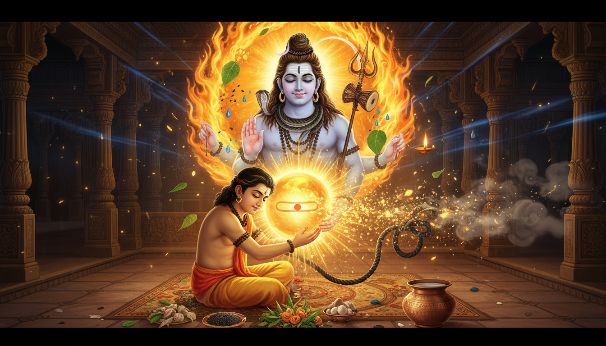

कुछ भय इंसान को भगाते हैं, और कुछ भय इतने विशाल होते हैं कि व्यक्ति कहीं हिल नहीं पाता। गंभीर मेडिकल रिपोर्ट से पहले, शोक की वर्षगांठ पर, लंबी यात्रा से पहले, किसी प्रियजन के जन्मदिन पर, और कभी-कभी आधी रात में शरीर को अचानक अपनी नश्वरता की याद आ जाती है।

मार्कंडेय इसी भय का वैदिक उत्तर हैं।
उनकी कथा यह जादुई दावा नहीं करती कि केवल जप करने से शरीर अमर हो जाएगा। वह इससे भी अधिक उपयोगी बात सिखाती है: जिस क्षण समय घेरने लगता है, उसी क्षण भीतर से कैसे जुड़ा जाए। एक बालक को बताया जाता है कि उसे केवल सोलह वर्ष मिलेंगे। वह चेतावनी से इनकार नहीं करता, माता-पिता को दोष नहीं देता, और भय के आगे निष्क्रिय भी नहीं बैठता। वह शिव की ओर इतनी पूर्णता से झुक जाता है कि मृत्यु भी विजेता नहीं, शिक्षक बनकर आती है। यम का पाश बालक और शिवलिंग दोनों को घेर लेता है, और यही छोटी भूल कथा का मर्म खोलती है: उच्च चेतना में समर्पित जीवन कभी अकेला और अलग नहीं रहता।
यह लेख उन सबके लिए है जो अकाल मृत्यु का भय, दीर्घ बीमारी, कठिन शनि दशा, मारक ग्रह का दबाव, बार-बार होने वाली दुर्घटनाएं, गहरा शोक, परिवार की सुरक्षा की चिंता या कर्म-सीमा का भार महसूस कर रहे हैं। इसमें कथा, उपाय-ज्योतिष, शिव-अनुष्ठान, मंदिर साधना, आयुर्वेदिक रसायन, दर्शन और सुरक्षित गूढ़ अभ्यास को एक साथ रखा गया है। कृपया हर उपाय को योग्य डॉक्टर के इलाज के साथ ही करें। मृत्युंजय साधना साहस, ओजस् और आध्यात्मिक शरण के लिए है; वह चिकित्सा, दवा या आपातकालीन उपचार का विकल्प नहीं है।
1. कथा: सोलह वर्ष और एक आलिंगन
मुनि मृकंडु और उनकी पत्नी संतान के लिए दीर्घ तप करते हैं। शिव प्रसन्न होकर उन्हें एती कठिन वरदान देते हैं: या तो तेजस्वी, विद्वान और शीलवान पुत्र, जिसकी आयु केवल सोलह वर्ष होगी, या मंद बुद्धि और दीर्घ जीवन वाला पुत्र।
वे प्रकाश चुनते हैं। उनका पुत्र मार्कंडेय जन्म लेता है।
वह वेद सीखता है, कोमल और तेजस्वी बनता है, और शिव-भक्ति में बड़ा होता है। माता-पिता के हृदय में एक छिपा शोक रहता है। जैसे-जैसे सोलहवां वर्ष निकट आता है, उनका दुःख खुल जाता है और मार्कंडेय को भविष्यवाणी का पता चलता है। वह टूटता नहीं। वह केवल यह पूछता है कि शेष दिन कैसे जीए जाएं।
नियत दिन पर वह शिवलिंग के सामने पूजा में बैठता है। यम के दूत उसकी एकाग्रता के तेज के समीप नहीं जा पाते, तब यम स्वयं आते हैं। मार्कंडेय शिवलिंग को आलिंगन कर लेता है। बालक के लिए फेंका गया पाश शिवलिंग को भी घेर लेता है। शिव काल-संहार रूप में प्रकट होते हैं और समय के उस दंश को रोक देते हैं। यम दब जाते हैं और बाद में ब्रह्मांड के क्रम के लिए पुनः कार्य करते हैं। मार्कंडेय सदा सोलह वर्ष के बालक बने रहते हैं। वे अमर चिरंजीवी इसलिए बनते हैं, क्योंकि वे धर्म से भागे नहीं; वे समय के आधार में प्रवेश कर गए।
कथा तीन उपाय-सूत्र देती है।
पहला, चेतावनी दंड नहीं है; वह संरेखण का आह्वान है। दूसरा, शिवलिंग बाहर की वस्तु नहीं है; वह अक्ष है जहां तुम्हारा भय, भक्ति, श्वास और धर्म मिलते हैं। तीसरा, सुरक्षा तब मिलती है जब समर्पण अभ्यास से जुड़ा हो, न कि जब आतंक नियति से सौदेबाजी करने लगे।
2. आयुष्ठान ज्योतिष: जीवन और मृत्यु के भाव
वैदिक ज्योतिष में आयु किसी एक ग्रह या एक भाव से नहीं देखी जाती। अष्टम भाव आयुष्थान कहलाता है। वह दीर्घायु और परिवर्तन का प्रधान स्थान है। अष्टम से अष्टम, यानी लग्न से तीसरा भाव, आयु का द्वितीय स्तंभ माना जाता है। दूसरा और सातवां भाव मारक स्थान कहलाते हैं, क्योंकि वे इन आयु-स्थानों से बारहवें स्थान पर होते हैं।
इसका अर्थ यह नहीं कि मृत्यु की तारीख तय हो गई। उत्तरदायी ज्योतिषी इन संकेतों को कभी निश्चित मृत्यु-भविष्यवाणी में नहीं बदलता। उपाय-कार्य में मारक दबाव प्रायः इस रूप में महसूस होता है:
- शरीर लगातार थका हुआ लगता है,
- कोई लक्षण समय पर चिकित्सक तक नहीं पहुंचता,
- अधिक कार्य और कम विश्रांति से पुनर्स्थापन टूट जाता है,
- परिवार में संकट पुराने भय को उजागर करता है,
- यात्रा या दुर्घटना का खतरा बढ़ जाता है,
- एक पुरानी पहचान विघटित हो रही होती है,
- या मानसिक स्वास्थ्य का समर्थन तुरंत आवश्यक होता है।
शनि यहां विशेष महत्वपूर्ण हैं। वे आयुष्कारक हैं, अर्थात दीर्घायु के कारक भी हैं। परंतु जब वे मारक कारकों से जुड़ जाते हैं या दुष्प्रभावित होते हैं, तो गंभीर शिक्षा देते हैं। शनि हमें धीमा करके सिखाते हैं। उपाय शनि से द्वेष नहीं है; उपाय यह है कि शनि को हमें धीमा करने से पहले ही अनुशासन अपना लिया जाए।
आयु उपाय सारिणी
| कुंडली दबाव | अनुभव | मार्कंडेय उपाय |
|---|---|---|
| दुष्कर अष्टम भाव | भय, शल्य चिकित्सा, दीर्घ रोग, विवाद | महामृत्युंजय जप, चिकित्सक परामर्श, शिव अभिषेक, निद्रा |
| दुष्कर तृतीय भाव | कम साहस, कमजोर उपचार, श्वास-संबंधी थकान | प्राणायाम, हल्का व्यायाम, शिव मंत्र, रोज एक साहसिक कार्य |
| द्वितीय या सप्तमेश दबाव | परिवार, भोजन, कंठ, संबंध या वृक्क की कमजोरी | सात्विक भोजन, जल, सत्य वाणी, संबंध-मरम्मत, दान |
| शनि मारक से जुड़े हों | थकान, विलंब, दायित्व का भार | शनिवार दीप, तिल दान, वृद्ध सेवा, निद्रा-अनुशासन |
| राहु-केतु आयुष्ठान पर | अचानक भय, अत्यधिक शोध, अस्पष्ट आतंक | मूलभूत साधना, मंत्र, झोलाछाप उपचार से बचाव, व्यावहारिक सुरक्षा |
| चंद्रमा दुष्कर | चिंता, अनिद्रा, भावनात्मक आतंक | चंद्र ध्यान, उपयुक्त आहार या अश्वगंधा, परामर्श सहयोग |
इस सारिणी को कभी रोग-निदान न मानो। यह अनुशासन, देखभाल और समय का मार्गदर्शन है। जांच कराओ, दवा लो, और लक्षण डॉक्टर को बताओ। ज्योतिष तैयारी में सहायक हो सकती है; चिकित्सा का विकल्प नहीं।
3. अक्टूबर 2026 गोचर संरेखण: शनि-भारी समय में शिव
वर्तमान गोचर मार्कंडेय साधना के लिए एक उपयुक्त लय देते हैं। शनि मीन राशि में वक्री हैं। मीन जल तत्व की राशि समाप्ति, स्वप्न, करुणा, पैतृक स्मृति और आध्यात्मिक समर्पण से जुड़ी है। वक्री शनि हमें आगे भागने से नहीं, अपूर्ण दायित्वों की समीक्षा की ओर बुलाते हैं। अक्टूबर के अधिकांश भाग में गुरु कर्क राशि में हैं और अंत में सिंह में प्रवेश करेंगे। वे भावनात्मक सुरक्षा, शिक्षा और धर्म-स्मृति को बल देते हैं। राहु कुंभ में और केतु सिंह में हैं, इसलिए सामूहिक महत्त्वाकांक्षा और व्यक्तिगत वैराग्य के बीच खिंचाव बना हुआ है। शुक्र और बुध तुला में वक्री हो रहे हैं, इसलिए संबंध, धन, दस्तावेज और वाणी में जल्दबाजी से अधिक समीक्षा आवश्यक है।
शिव साधना के लिए उपयुक्त समय ये हैं:
- सोमवार: नियमित मृत्युंजय जप और शिव अभिषेक।
- प्रदोष: क्षमा, आयु-प्रार्थना और अपराध-भाव के विमोचन के लिए।
- मासिक शिवरात्रि: साधना के हल्के रूप के लिए।
- कालाष्टमी: काल भैरव सुरक्षा और भय-मुक्ति के लिए।
- जन्म नक्षत्र दिवस: व्यक्तिगत आयुष्य संकल्प के लिए।
- शनिवार: दायित्व, सेवा और शनि-शांति के लिए।
- विशेष जन्मदिन: साठवीं, सत्तरवीं, अस्सीवीं और इक्यासीवीं वर्ष में आयुष्य शांति की परंपरा।
वर्तमान शनि गोचर आतंक नहीं मांगते; वे दीर्घ दृष्टि मांगते हैं। जियो जैसे शरीर धर्म का है। सोओ जैसे तंत्रिका-तंत्र पवित्र है। अपने कार्य ऐसे पूरे करो जैसे विलंब अनुमत नहीं है। तब शनि थकान का दूत नहीं, आयु के रक्षक बनते हैं।
4. महामृत्युंजय मंत्र
यह मंत्र ऋग्वेद 7.59.12 से है:
ॐ त्र्यम्बकं यजामहे सुगन्धिं पुष्टिवर्धनम्। उर्वारुकमिव बन्धनान् मृत्योर्मुक्षीय मामृतात्॥
सरल अर्थ है: "हम तीन नेत्र वाले, सुगंधित और पोषक शिव की उपासना करते हैं। जैसे पका फल डंठल से सहज रूप से मुक्त हो जाता है, वैसे हम मृत्यु के बंधन से मुक्त हों और अमृत से जुड़े रहें।"
यह प्रतीक अत्यंत सटीक है। फल को बलपूर्वक नहीं तोड़ा जाता। वह पकता है और डंठल सहज रूप से ढीला हो जाता है। मंत्र असमय भागने की याचना नहीं करता। वह परिपक्वता मांगता है: जो गिरना चाहिए वह गिर जाए, ओजस् पोषित रहे, और आत्मा अमृत से जुड़ी रहे।
108 जप अभ्यास
- पूर्व या उत्तर दिशा में रीढ़ सीधी रखकर बैठो।
- नौ गहरे श्वास लो और भीतर कहो: "मैं जीवन, अनुशासन और शरण चुनता हूं।"
- भ्रूमध्य में चंद्रमा जैसे श्वेत प्रकाश या कंठ में कोमल नीले प्रकाश का ध्यान करो।
- ॐ त्र्यम्बकं यजामहे सुगन्धिं पुष्टिवर्धनम्। उर्वारुकमिव बन्धनान् मृत्योर्मुक्षीय मामृतात् का 27, 54 या 108 बार जप करो।
- प्रत्येक जप पिछले से धीमा होने दो।
- अंत में हृदय पर हाथ रखो और कहो: "मेरे शेष दिन उपयोगी, सचेत और निर्भय हों।"
- गर्म जल लो और एक व्यावहारिक स्वास्थ्य-कार्य करो: दवा लो, सात्विक भोजन बनाओ, जांच का समय निकालो, या समय पर सोओ।
यदि उच्चारण कठिन लगे, तो पहले कुछ दिन विश्वसनीय पाठ सुनते रहो। छोटा अभ्यास नियम से किया गया, बड़े अभ्यास से अधिक बलवान होता है।
5. शिवलिंग आलिंगन: थोड़ा गूढ़ आंतरिक उपाय
कथा का सर्वाधिक प्रसिद्ध दृश्य अक्सर उपाय के रूप में भूल जाता है: मार्कंडेय यम से भागे नहीं। उन्होंने शिवलिंग को आलिंगन किया।
इसे भय का नाटक बनाए बिना आंतरिक अभ्यास में बदला जा सकता है।
- एक हाथ दूसरे हाथ पर रखकर हृदय पर जोड़ो।
- श्वास को मूलाधार से शिखर तक जाती एक सूक्ष्म रज्जु मानो।
- भीतर कहो: "समय जो भी ले आए, मैं उसे अकेले नहीं, शिव के साथ मिलूं।"
- चार गिनती में श्वास लो, दो पर रोको, छह में छोड़ो।
- छाती के चारों ओर काले धुएं जैसा भय देखो। प्रत्येक निःश्वास पर उसे ढीला और श्वास में परिवर्तित होते देखो।
- हृदय के केंद्र में एक सीधा श्वेत प्रकाश-स्तंभ देखो, शिवलिंग की तरह स्थिर।
- पांच से ग्यारह मिनट स्थिर रहो।
यह इनकार नहीं है। यह तंत्रिका-तंत्र का अभ्यास है। भय शरीर को सिकोड़ता है; भक्ति शरीर को अक्ष देती है। जब शरीर को आधार मिलता है, श्वास गहरा होता है, निर्णय सुधरते हैं, और चिकित्सा को कम आतंक से ग्रहण किया जाता है।
6. रुद्राभिषेक और मृत्युंजय हवन
पूर्ण महामृत्युंजय हवन सामान्यतः प्रशिक्षित पुरोहित या विश्वसनीय मंदिर द्वारा कराना उचित है, क्योंकि उच्चारण, अग्नि सुरक्षा, क्रम और स्थानीय पद्धति महत्वपूर्ण हैं। गृहस्थ साधक रुद्राभिषेक के सार सोच सकता है।
गृह शिव अभिषेक
- पूजा स्थान स्वच्छ करो और शिवलिंग या शिव प्रतिमा रखो।
- ॐ नमः शिवाय जपते हुए धीरे-धीरे जल अर्पित करो।
- परंपरा अनुसार थोड़ा दूध, मधु, दही, घृत और शर्करा अर्पित करो; कुछ बूंदें भी पर्याप्त हैं।
- बिल्व पत्र, श्वेत पुष्प, अक्षत और चंदन चढ़ाओ।
- घृत दीप और अगरबत्ती जलाओ।
- महामृत्युंजय मंत्र 108 बार जपो।
- मस्तक पर विभूति या भस्म लगाओ और प्रार्थना करो: "मैं सुरक्षित, उपयोगी और निर्भय रहूं।"
औपचारिक मृत्युंजय हवन में प्रायः घृत, समिधा, औषधि, जौ, काले तिल, अक्षत, दूर्वा या दर्भ, बिल्व पत्र, पुष्प और मधु का उपयोग होता है। परिवार इसे रोग से उन्नति, विशेष जन्मदिन, कठिन दशा या दीर्घ यात्रा से पहले कराते हैं। हवन आशीर्वाद और सहनशक्ति की प्रार्थना है; यह परिणाम की गारंटी या इलाज का विकल्प नहीं।
7. तिरुक्कड़ैयूर: जहां समय रुका
इस कथा से जुड़े प्रसिद्ध मंदिरों में तमिलनाडु का अमृतघटेश्वर-अबिरामी मंदिर प्रमुख है। यहां शिव काल-संहार रूप में पूजे जाते हैं। मान्यता है कि जब यम का पाश मार्कंडेय और शिवलिंग दोनों को घेर गया, तब शिव ने यम को विराम दिया। यह मंदिर अमृत और दीर्घायु उपासना से भी जुड़ा है।
यहां प्रायः विशेष जन्मदिन मनाए जाते हैं:
- षष्ठियब्द पूर्ति: साठ वर्ष की पूर्ति।
- भीमरद शांति: सत्तरवां जन्मदिन।
- सदाभिषेकम: इक्यासी वर्ष की पूर्ति।
यात्रा संभव न हो तो घर पर प्रतीकात्मक मंदिर संरेखण करो:
- एक छोटा कलश स्वच्छ जल से भरो और पास बिल्व पत्र या श्वेत पुष्प रखो।
- जल अर्पित करो जैसे मार्कंडेय तीर्थ को शिव को समर्पित कर रहे हो।
- परिवार की दीर्घायु के नाम से एक घृत दीप जलाओ।
- किसी वृद्ध, रोगी या जरूरतमंद को भोजन कराओ।
- कहो: "इस अर्पण का पुण्य बालकों, वृद्धों, रोगियों और जीवित प्राणियों की रक्षा करे।"
मंदिर का सार यही है: आयु का उपाय केवल व्यक्तिगत डर दूर करने के लिए नहीं, सेवा के लिए प्राप्त होता है।
8. आयुर्वेदिक रसायन: ओजस् और व्यावहारिक अमरता
आयुर्वेद शरीर के गहरतम बल को ओजस् कहता है। रसायन चिकित्सा पाचन, निद्रा, पोषण, औषधि और भावनात्मक अनुशासन द्वारा इसी भंडार को पुनर्निर्मित करती है। मार्कंडेय की भाषा में, रसायन वह विधि है जिससे शरीर मंत्र का सहयोग करने लगता है।
व्यावहारिक रसायन नियम:
- ताजा, गर्म और नियत समय पर बना भोजन खाओ।
- पहले पाचन रक्षो; टॉनिक बाद में। कमजोर अग्नि श्रेष्ठ रसायन भी पचा नहीं पाती।
- रात दस बजे से पहले सोने का प्रयत्न करो और संभव हो तो सूर्योदय से पहले जागो।
- गर्म जल लो; थकान में बर्फ-जल प्रयोग कम करो।
- रात में मोबाइल स्क्रीन, डूमस्क्रॉलिंग और भय-प्रधान सामग्री घटाओ।
- अपनी प्रकृति और स्वास्थ्य के अनुसार घृत, भीगे बादाम, खजूर, मौसमी फल, मूंग, चावल, दूध और तिल उपयुक्त मात्रा में ले सकते हैं।
- आंवला, गुडूची, अश्वगंधा, ब्राह्मी, शतावरी और च्यवनप्राश प्रसिद्ध रसायन हैं, परंतु विशेषकर मधुमेह, वृक्क रोग, यकृत रोग, गर्भावस्था, उच्च रक्तचाप या निरंतर दवा की स्थिति में योग्य आयुर्वेद चिकित्सक से पूछे बिना न लो।
- प्रतिदिन प्रातः कालीन में चलो।
- प्रतिक्रिया से पहले श्वास लो। भय कार्य से अधिक तेजी से ओजस् खा जाता है।
च्यवनप्राश आंवला आधारित शास्त्रीय बहु-औषधीय रसायन है। इसे प्रतिरक्षा, श्वसन बल, जीवनी शक्ति और वृद्धावस्था से रक्षा से जोड़ा जाता है। आधुनिक समीक्षाएं इसके एंटीऑक्सिडेंट और इम्युनोमॉड्यूलेटरी गुणों का उल्लेख करती हैं, साथ ही अधिक उच्च स्तरीय क्लिनिकल अध्ययन की आवश्यकता भी बताती हैं। आध्यात्मिक उपयोग के लिए यही संतुलन सही है: परंपरा का सम्मान करो, प्रमाण का भी। किसी टॉनिक को चमत्कार न बनाओ।
9. शनि अनुशासन: सब उपायों के पीछे का उपाय
कथा में मार्कंडेय की विजय अचानक लगती है, पर उनका अभ्यास धैर्यपूर्ण है। शनि इसी को सम्मान देते हैं। शनि का सर्वशक्तिमान उपाय भय नहीं; व्यवस्था है।
शनिवार आयुष्य अभ्यास
- प्रातः जागो और यदि उपयुक्त हो तो शरीर या पैरों में तेल मलो।
- शिव या काल भैरव के लिए तिल तेल या सरसों तेल का दीप जलाओ।
- ॐ शं शनैश्चराय नमः का 27 या 108 बार जप करो।
- काले तिल, उड़द, लोहा, कंबल या भोजन किसी जरूरतमंद को दान करो।
- किसी वृद्ध, रोगी, अभावग्रस्त व्यक्ति, श्रमिक या पशु आश्रम की सेवा करो।
- शाम से पहले एक टला हुआ दायित्व पूरा करो।
- समय पर सोओ।
अन्य स्थिर शनि उपाय हैं: कर्मकरों का सम्मान, वाणी में क्रूरता का ह्रास, वृद्धों की देखभाल, वादे निभाना, शनिवार दान और थकान में अनावश्यक जोखिम न लेना। व्रत वैकल्पिक है और गर्भावस्था, मधुमेह, दवा, रोग या उपचार की स्थिति में कभी जबरन नहीं रखना चाहिए।
10. काल भैरव: समय के गूढ़ रक्षक
जो साधक शैव और तांत्रिक उपाय की गहराई की ओर खिंचते हैं, उनके लिए काल भैरव समय के रक्षक हैं। जहां मृत्युंजय शिव मृत्यु-भय के चिकित्सक हैं, वहां भैरव सीमा के कठोर रक्षक हैं। वे सिखाते हैं कि समय का दुरुपयोग रोकना आवश्यक है: बर्बाद ओजस्, हानिकारक संगति, अनियमित रातें, बदले की भावना, भय से प्रेरित अनुष्ठान और धर्म को नुकसान पहुंचाने वाले शॉर्टकट।
सुरक्षित भैरव अभ्यास किसी को हानि पहुंचाने की विधि नहीं है। वह भय, आंतरिक शत्रुओं और आत्मघाती आदतों को काटता है।
कालाष्टमी अभ्यास
कृष्ण पक्ष अष्टमी को, प्रायः रात्रि में:
- पूजा स्थान के दक्षिण या पश्चिम कोण स्वच्छ करो।
- सरसों या तिल तेल का दीप जलाओ।
- काले तिल, लाल या श्वेत पुष्प और चंदन अर्पित करो।
- ॐ काल भैरवाय नमः का 108 बार जप करो।
- यदि ज्ञात हो तो काल भैरव अष्टकम सुनो या पढ़ो।
- कहो: "मैं भय छोड़ता हूं। मैं अपनी साधना से किसी को हानि नहीं पहुंचाऊंगा। मैं समय का अनुशासन स्वीकार करता हूं।"
- यदि व्यावहारिक और अनुमत हो, तो किसी कुत्ते को सुरक्षित भोजन दो; यह भैरव की पारंपरिक भेंट मानी जाती है।
- सामर्थ्य अनुसार भोजन या वस्त्र दान करो।
एक सूक्ष्म रक्षा-ध्यान: पीछे गहरे नीले रंग का एक रक्षक रूप देखो, जो तुम्हारी सीमा पर प्रकाश का दंड थामे हुए है। यह प्रकाश केवल भय, घुसपैठ और आत्म-संहार को काटता है। यह मनोवैज्ञानिक और भक्तिपूर्ण अभ्यास है; आक्रमण का साधन नहीं। यदि गंभीर चिंता, स्वप्न-संबंधी भय, आक्रामक विचार या आघात के लक्षण हैं, तो इसे योग्य मानसिक स्वास्थ्य सहायता के साथ करो।
11. नेत्र तंत्र का प्रकाश: छिपी अमरता
नेत्र तंत्र जैसे शैव ग्रंथ मृत्युंजय को चेतना के आंतरिक तेज के रूप में समझाते हैं: इच्छा, ज्ञान और क्रिया का प्रकाश, जो शरीर की आयु में समा नहीं जाता। अभ्यास का उद्देश्य मृत्यु को पूजना नहीं, बल्कि उस अमर साक्षी को पहचानना है जो जीवन को धारण करता है।
संक्षिप्त नेत्र-शैली अभ्यास:
- नेत्र बंद करो और भ्रूमध्य में शीतल चंद्र प्रकाश देखो।
- श्वास भरते हुए उसे शिखर तक विस्तारित करो।
- छोड़ते हुए उसे हृदय तक लाओ।
- कहो: "यह चेतना रोग नहीं है, भय नहीं है, और समय-सीमा नहीं है।"
- कुछ मिनट उसी ज्ञान में स्थिर रहो।
यही कारण है कि मार्कंडेय सदा सोलह वर्ष के कहलाते हैं। परंपरा उस चेतना की बात कर रही है जिस पर गिनती का शासन नहीं चलता। शरीर बदले या न बदले, आत्मा अपनी गरिमा पुनः पा लेती है।
12. 41 दिवसीय मार्कंडेय अनुष्ठान
यह अनुष्ठान कठिन शनि दशा, मारक काल, रोग-उपचार, शोक या दीर्घ चिकित्सा के समय उपयोगी है।
| दिवस | अभ्यास | आंतरिक ध्यान |
|---|---|---|
| 1-7 | महामृत्युंजय 27 बार; प्रातः सूर्य; एक स्वास्थ्य-कार्य | जीवन अनुशासन |
| 8-14 | मंत्र 54 बार; सोमवार सरल शिव अभिषेक; रात 10:30 से पहले निद्रा | तंत्रिका शुद्धि |
| 15-21 | मंत्र 108 बार; शनिवार काले तिल दान; एक सत्य क्षमा | अपराध और पैतृक भय का विमोचन |
| 22-28 | 5-11 मिनट लिंग आलिंगन श्वास; एक भय-आदत घटाओ | भय को शरण से जोड़ो |
| 29-35 | मार्कंडेय कथा एक बार सुनो; किसी वृद्ध या रोगी को भोजन; कालाष्टमी दीप | आयु को सेवा बनाओ |
| 36-41 | एक सोमवार रुद्राभिषेक या संभव हो तो मृत्युंजय हवन; स्वास्थ्य योजना लिखो; आभार समापन | भय को धर्म में बदलो |
एक दिन छूट जाए तो पुनः शुरू करो। अनुष्ठान दिवस छूटने से नहीं टूटता; मार्ग छोड़ने से टूटता है।
13. विशेष भय के लिए उपाय
अकाल मृत्यु का भय
मृत्युंजय 108 बार जपो, अपना भय एक वाक्य में लिखो, और उसके नीचे तीन व्यावहारिक सुरक्षा-कार्य लिखो: एक चिकित्सा जांच, एक सुरक्षा योजना, एक स्वास्थ्य दस्तावेज और एक सहयोगी संपर्क। जब भक्ति में व्यावहारिक दायित्व आ जाता है, वह परिपक्व हो जाती है।
परिजन की बीमारी में भय
उनके नाम का संकल्प लो, शिव को जल अर्पित करो और उनके लिए 27 या 54 बार जप करो। अभ्यास को अस्पताल के इलाज का विकल्प न बनाओ। कमरा स्वच्छ रखो, दवा समय पर दो, और रोगी से शांत स्वर में बात करो। तुम्हारी स्थिरता स्वयं उपाय है।
दुर्घटना या आकस्मिक हानि का भय
कालाष्टमी पर भैरव दीप जलाओ। यात्रा से पहले वाहन जांचो, थकान में देर रात लापरवाह ड्राइविंग करने से बचो, विश्राम लो और ॐ काल भैरवाय नमः जपो। व्यावहारिक सावधानी तंत्र का ही एक अंग है।
मृत्यु के बाद शोक
अमावस्या पर पितरों के नाम जल, काले तिल और श्वेत पुष्प अर्पित करो। किसी जरूरतमंद को भोजन कराओ। फिर मृत्युंजय जपो, यह प्रार्थना कि हानि उलट जाए नहीं, बल्कि तुम्हारा ओजस् और शक्ति पुनर्निर्मित हो। मृत्यु संबंध को निरस्त नहीं करती; वह केवल रूप बदलती है।
उद्देश्य चूकने का भय
आगामी 41 दिनों में पूरा हो सकने वाला एक कार्य चुनो। प्रतिदिन जप से पहले उसका एक ठोस हिस्सा करो। मार्कंडेय का अल्प जीवन दीर्घ इसलिए हुआ क्योंकि वह व्यर्थ नहीं गया।
14. दार्शनिक रहस्य: मामृतात
मंत्र के अंतिम शब्द मामृतात् हैं। इनका भाव है: मुझे अमृत से मत काटो। यही छिपा उपाय है।
वैदिक दृष्टि में अमरता केवल शरीर का चिरकाल टिकना नहीं है। अमरता यह पहचान है कि चेतना, धर्म, प्रेम और क्रिया एक रूप की छोटी कथा से बड़ी हो सकते हैं। शरीर शारीरिक रूप से कोमल हो सकता है, पर साहस में अमर। माता-पिता देह छोड़ सकते हैं, पर संतानों को मिले मूल्यों में जीवित रह सकते हैं। शिक्षक शरीर छोड़ सकते हैं, पर हर साधक में जीवित रह सकते हैं जो सही अभ्यास करता है।
मार्कंडेय सिखाते हैं कि केवल यह मत पूछो, "मैं कितने दिन जीऊंगा?" यह पूछना शुरू करो, "मैं कितना सचेत जीऊंगा?" दूसरा प्रश्न केंद्र बन जाता है, तो पहला प्रश्न अपनी निर्ममता खो देता है।
15. तुम्हारा दैनिक मार्कंडेय संकल्प
प्रति प्रातः कहो:
मैं समय का इनकार नहीं करता। मैं भय की उपासना नहीं करता। मैं जीवन, चिकित्सा, अनुशासन, भक्ति और उपयोगी दिन चुनता हूं। जो मेरे वश में नहीं, उसे शिव थामें; जो मेरे वश में है, उसे मैं करूं।
फिर पांच कार्य करो:
- दो मिनट श्वास लो।
- मृत्युंजय जप करो।
- अपना स्वास्थ्य-कार्य करो।
- एक दायित्व पूरा करो।
- एक जीव के प्रति करुणा दिखाओ।
मार्कंडेय ने अमरता इस प्रकार पाई: यम से भागकर नहीं, बल्कि शिव को इतनी पूर्णता से थामकर कि भय के लिए खड़े होने की जगह ही न बची।
स्रोत
- Story of Markandeya - Wisdom Library
- Markandeya
- Rig Veda 7.59.12 - Wisdom Library
- Mahamrityunjaya Mantra
- Maha Mrityunjaya Homam: Meaning, Procedure, Benefits
- Maha Mrityunjaya Homa
- Amritaghateswarar-Abirami Temple, Thirukkadaiyur
- Tirukkadavur Amritaghateswarar Temple
- October 2026 Astrology: Transits, Purnima and Amavasya Dates
- Astrological Highlights: October 2026
- Mrityu Yoga: An Inauspicious Yoga
- Marakas or Death Inflicting Planets
- Chyawanprash: A Traditional Indian Bioactive Health Supplement
- Chyawanprash: A Traditional Indian Bioactive Health Supplement - MDPI
- Mrityunjaya Mantra, a Mantra for Healing and Comfort
- Kalashtami: Date, Puja Vidhi, Muhurat and Significance
Sources
No source URLs were returned by NotebookLM for this run.